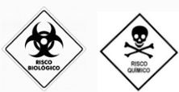
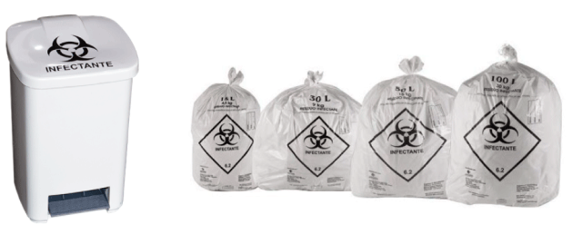

Etapas do gerenciamento dos resíduos de saúde
As etapas do gerenciamento dos RSS devem estar contempladas nos Planos de Gerenciamento de Resíduos de Serviços de Saúde (PGRSS) de cada estabelecimento de saúde. De acordo com a RDC ANVISA 222/2018, para o gerenciamento adequado torna-se necessário executar as seguintes etapas:
Separação dos resíduos no momento da geração, de acordo com as características físicas, químicas, biológicas e os riscos envolvidos.
Embalar os resíduos segregados em recipientes ou sacos plásticos adequados, de maneira a evitar vazamento e resistir à punctura e ruptura.
Informar sobre o tipo de resíduo armazenado nos recipientes ou sacos plásticos, indicando a simbologia de risco quando for o caso.
Movimentação dos resíduos do local de geração até o armazenamento temporário, normalmente efetuada pela equipe da limpeza da unidade de saúde. Os recipientes coletores de materiais perfurocortantes devem estar devidamente lacrados e armazenados em sacos plásticos com a simbologia de infectantes..
Guarda temporária dos resíduos já acondicionados em recipientes adequados, não sendo permitido dispor os sacos plásticos diretamente no chão.
Aplicação de método ou processo que reduza ou elimine o risco de contaminação dos resíduos. Aplicável aos resíduos de maior risco de contaminação. Normalmente são adotadas as técnicas da autoclavagem ou uso de substâncias químicas saneantes.
Similar ao armazenamento temporário, porém com o foco no preparo dos resíduos para a coleta externa. Segue mantida a regra de não ser permitido dispor sacos plásticos contendo resíduos diretamente no chão.
Coleta realizada por empresa externa (normalmente terceirizada), que recolhe os resíduos e transporta até a unidade em que o tratamento/destinação final será realizado.
Aplicação de técnica de tratamento aos resíduos, garantindo a redução dos riscos e fator que gera toxicidade ao resíduo. Normalmente seguida por disposição final em aterro (seja aterro industrial ou sanitário, dependendo das características do resíduo).

Plano de Gerenciamento de Resíduos Sólidos da Saúde
O Plano de Gerenciamento de Resíduos Sólidos da Saúde (PGRSS) é um documento baseado nos princípios da não geração e da minimização da geração de resíduos, que aponta e descreve as ações relativas ao seu manejo, propondo medidas de adequação para que o empreendimento esteja em conformidade com a Política Nacional de Resíduos Sólidos (Lei nº. 12.305/2010) e demais legislações vigentes.
Fonte: Plano de Gerenciamento de Resíduos de Serviço de Saúde - Ebserh (2018)
A maior parte das etapas do gerenciamento dos RSS demanda uma atuação direta da unidade geradora dos resíduos. Mesmo quando os resíduos são destinados para empresas terceiras, que farão o tratamento/destinação final, há a responsabilidade de contratar empresas licenciadas e que garantam de fato o processo de gerenciamento com a máxima segurança, preservando a saúde da população e assegurando a não geração de impactos ambientais negativos.
Sugestões de modelos de auditoria
Visando favorecer o controle destes processos, auditorias internas podem ser utilizadas para monitorar o cumprimento dos requisitos mínimos necessários de execução do gerenciamento dos resíduos. Estes processos podem ocorrer tanto no âmbito interno do estabelecimento de saúde, quanto no âmbito externo.
Você encontra sugestões de modelos de auditoria no artigo Instrumentos para vistoria em incineradores: um modelo baseado no contexto dos geradores de resíduos de serviços de saúde (PEREIRA & MOL, 2017; MOL, SANTOS & NUNES, 2016)
Segregação e acondicionamento
Marcos Mol, pesquisador da Fundação Ezequiel Dias e coordenador do Grupo de Pesquisa Saúde e Meio Ambiente, fala sobre os pontos mais importantes do processo de gerenciamento dos resíduos de serviços de saúde.
Agora, vamos ver em mais detalhes os pontos apresentados por Marcos Mol.
A segregação e acondicionamento dos resíduos devem ser realizados no momento da sua geração, seguindo as regras de separação pelas características físicas e riscos inerentes a cada tipo de resíduo.
O acondicionamento deve ser adotado para garantir que não haja riscos durante o transporte do resíduo, de maneira a proteger os trabalhadores e manter seguros os ambientes até a destinação final. Deve-se garantir também a identificação dos riscos, conforme simbologia que o representa.
Fonte: ANVISA
Já o armazenamento, para os resíduos perfurocortantes, deve ser utilizado recipiente que seja resistente à ruptura e punctura, devidamente identificado. Os frascos de vacina vazios ou com conteúdo, porém com prazo de validade expirado, devem ser acondicionados também nestes coletores de material perfurocortante, por apresentar o risco de quebra do frasco e, consequentemente, representar risco de cortes e ferimentos.
Após preenchidos na capacidade recomendada pelo fabricante (normalmente ⅔ da capacidade do recipiente), os recipientes coletores de materiais perfurocortante devem ser lacrados com segurança e acondicionados em sacos plásticos identificados como resíduos infectantes. Se existir resíduos de vacinação - subgrupo A1 - o saco plástico deve ser da cor vermelha para evidenciar o maior risco.
É importante respeitar a limitação de quantidade a ser estocada - seguindo orientações do fabricante - e manter o coletor identificado e em local seguro.
Os demais resíduos perfurocortantes e potencialmente infectantes, tais como seringas e agulhas usadas, utilizadas para administração das vacinas, também devem ser descartadas neste coletor. Destaca-se que a atribuição de realizar a correta segregação dos resíduos, no momento da geração, é responsabilidade do trabalhador da sala de vacina.
De acordo com o Manual de Normas e Procedimentos para Vacinação, do Ministério da Saúde, é recomendado que os frascos vazios de imunobiológicos, assim como os descartados por perda, devem ser descartados em coletor de materiais perfurocortantes.
Os demais resíduos gerados na sala de vacinação devem ser acondicionados em lixeiras devidamente identificadas, contendo sacos plásticos também identificados com a simbologia de risco quando for o caso. Os resíduos infectantes de menor risco, subgrupo A4 (materiais como algodão, gaze, luvas ou máscaras utilizadas pelos profissionais da saúde ou pacientes), devem ser acondicionados em sacos plásticos branco leitosos, identificados com a simbologia de resíduos infectantes.
Já os resíduos sem risco de contaminação devem ser acondicionados em recipientes identificados como resíduo comum, utilizando saco plástico preto.
É extremamente recomendado a implantação da coleta seletiva, separando os resíduos comuns como plástico, papel, vidro e metal, desde que não contaminados. Estes materiais, sempre que possível, devem ser destinados a associações de catadores de materiais recicláveis.
Finalmente, é importante lembrar que as regras apresentadas neste documento são as preconizadas em condições normais de funcionamento das unidades de vacinação. É necessário levar em consideração que, em tempos de pandemia, as regras de classificação dos riscos dos resíduos podem sofrer alterações, segundo orientação dos órgãos de vigilância sanitária (federal, estadual ou municipal). Mantenha-se informado com a sua Secretaria de Saúde e siga as orientações de classificação de risco estabelecidas para a sua região.
Coleta e tratamento dos resíduos
A realização da coleta dos resíduos de serviços de saúde deve ser operacionalizada por profissionais treinados e com uso dos equipamentos de proteção individual (EPI) adequados. Neste caso, devem ser usados como EPI máscaras, luvas, botas e óculos. Estes equipamentos devem ser higienizados após o uso, e os trabalhadores devem higienizar as mãos com água e sabão sempre que possível, podendo também fazer o uso do álcool gel.
Os abrigos de armazenamento dos RSS devem ser higienizados periodicamente, de acordo com a demanda do local, e sempre após as coletas externas. Deve ser utilizado solução de Hipoclorito de Sódio 2% em toda a superfície do abrigo, bem como nos recipientes de armazenamento dos RSS.